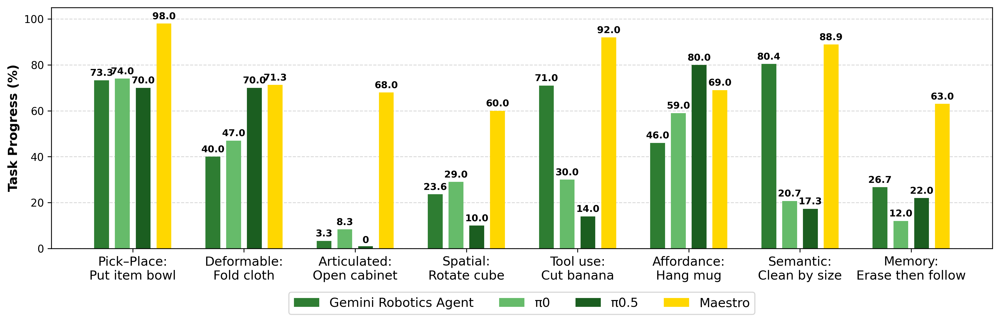
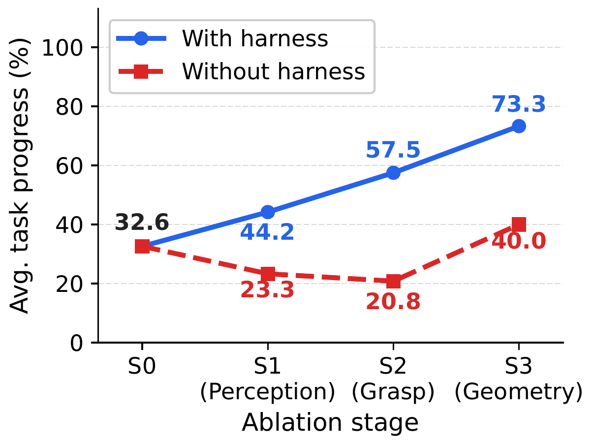
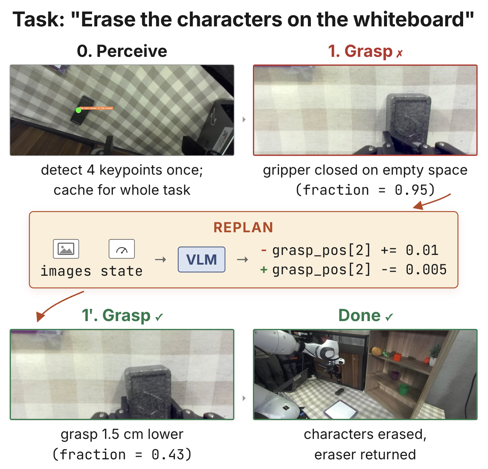
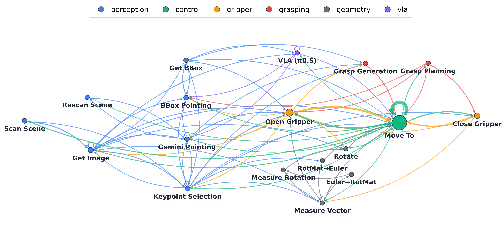
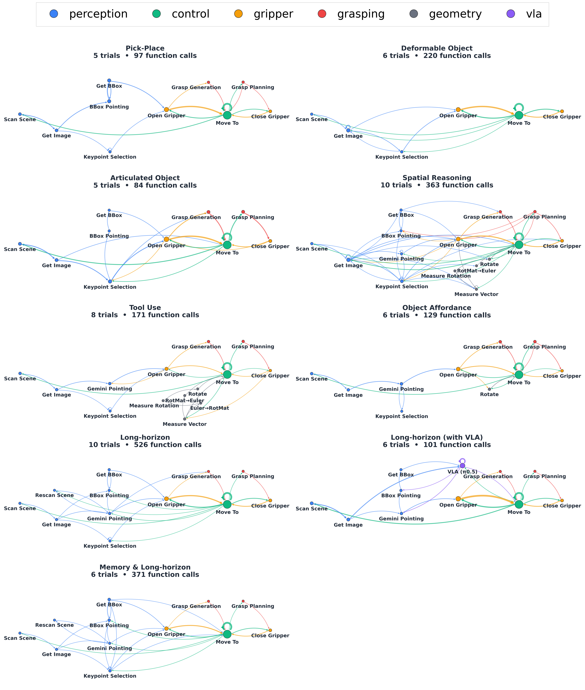
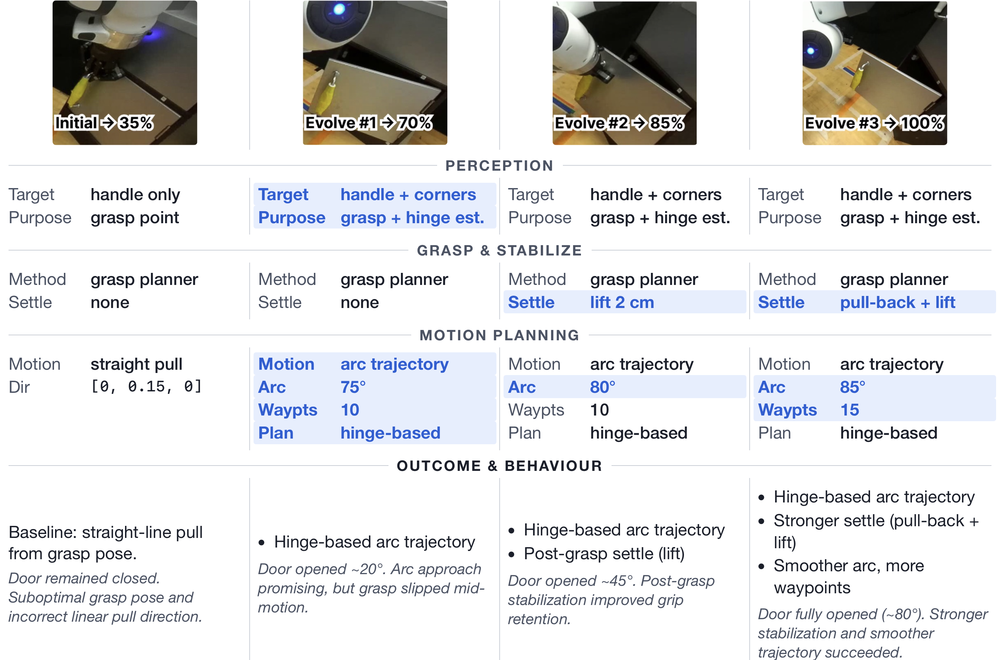
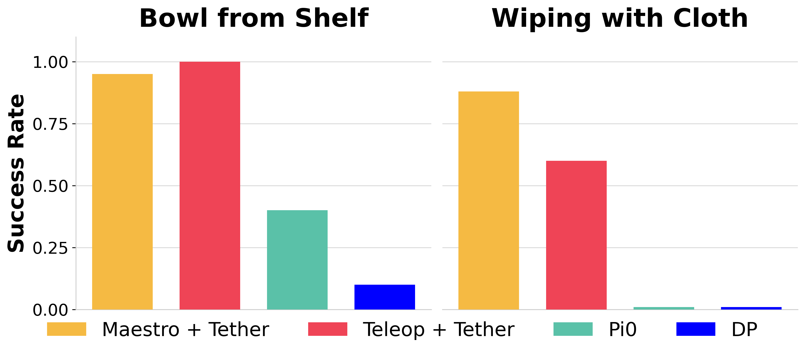

Maestro: Orchestrating Robotics Modules with Coding Agents for Zero-Shot Generalist Robots
Overview of Maestro
TLDR: We introduce Maestro, a VLM coding agent that dynamically composes curated, best-in-class robotics modules into programmatic, closed-loop policies. Its core contribution is a robotics-specific harness that makes composing these error-prone external tools actually work in the open, dynamic real world. Maestro represents the first competitive modular generalist policy:
- A robotics-specific harness wraps error-prone tool chains in robust calls, renders their outputs back for the VLM to verify, and closes the loop to recover from failures; ablations show the same tools without this harness barely help and can even drop below the no-tool baseline
- Matches or surpasses state-of-the-art VLA models zero-shot, with the largest gains in settings underrepresented in VLA training data, using no new teleoperation data
- Interpretable, debuggable, and easily extensible to new tools and robot embodiments (including a quadruped-mounted arm)
- Improves from a handful of real-world trials via local code edits
- Can call a VLA as one of its tools for both speed and performance
- Autonomously generates real-world trajectories that, combined with data-augmentation frameworks, produce policies rivaling those trained on human-collected data

Maestro receives language instruction and leverages a set of tools to complete diverse tasks in a zero-shot setting.

Given prompt and images, VLM plans by writing and executing code that integrates perception, spatial reasoning, control, learned visuomotor policies, and image editing. Execution results (images and stdout) provide feedback for reacting and replanning, forming a closed-loop perception–action–learning cycle. This enables adaptive long-horizon manipulation, as illustrated in the tabletop example on the right (instruction: Grasp the knife by the handle and cut the banana in the middle).
Abstract
Today's dominant route to generalist robots scales up "observations-in, actions-out" teleoperation datasets to train large end-to-end models, echoing the recipe behind vision-language models (VLMs). We pursue a road less traveled: building generalist policies directly around VLMs, augmenting their broad capabilities with a curated set of perception, planning, and control modules. In Maestro, a VLM coding agent dynamically composes these modules into a programmatic, closed-loop policy that monitors execution and replans autonomously. It shares the coding-agent pattern of prior code-as-policies (CaP) systems, but unlike a coding agent acting on files it controls, a robotics agent controls neither its tools nor the open, dynamic world they act in, so any tool can fail unpredictably. Maestro's core contribution is a robotics-specific harness that makes composing curated external robotics models actually work, wrapping error-prone tool chains in robust calls, rendering their outputs back for the VLM to verify, and closing the loop to recover from failures. Ablations show that adding the same tools without this harness barely helps and can even drop performance below the original no-tool baseline. Across challenging tabletop and mobile manipulation tasks, and with no new teleoperation data, this lets a zero-shot coding agent match or surpass state-of-the-art vision-language-action (VLA) models, with the largest gains in settings underrepresented in VLA training data, making Maestro the first competitive modular generalist policy. Maestro can further call a VLA as one of its tools and autonomously generate real-world trajectories for downstream learning. We argue that building out this kind of agentic system is a complementary, far less-explored axis to data scaling for general-purpose robots.
Interactive Agent Dashboard
To provide full transparency into Maestro's decision-making process, we present an interactive agent dashboard that replays a complete robot manipulation trial in real time. As the task progresses, the dashboard simultaneously reveals every layer of the system: the subtask progression through the overall plan, the VLM agent's reasoning and planning traces, the live code being generated and executed line-by-line, and perception outputs produced by the invoked tool modules. All panels stay tightly synchronized with the task timeline, offering a comprehensive view of how Maestro orchestrates diverse modules to solve complex manipulation tasks. We also include a trial where the agent detects a subtask failure in real time and autonomously replans to correct it, showcasing Maestro's closed-loop adaptability.
Tabletop Manipulation Videos
"Open the lower cabinet door by pulling the yellow door handle."
"Fold the four corners of the towel to the center"
"Erase instructions on the whiteboard, then follow the instruction to stack cubes."
"Rotate the cube so that one of the purple side faces up."
"Put the tennis ball into the bowl."
"Hang the mug cup onto the mug hanger stand."
"Orthogonally cut the banana in half with the black knife."
"Clean the table by putting all the items into the bowl, from big size to small size."
Mobile Manipulation Videos
"Open door and enter the building."
"Search for the orange plush ball and return when grasped."
"Trash out the green plush ball into the garbage can."
"Collect all plush toys on the white table"
Systematic Generalization for Evaluation
Our evaluation protocol is designed for systematic experimentation, adopting the STAR-Gen taxonomy of generalization for robot manipulation. STAR-Gen formalizes testing by creating systematic perturbations relative to a base task. We leverage the STAR-Gen scenario generation tool, prompting Gemini to generate diverse task instances across four key axes: visual changes to task-relevant objects, changes to object poses, changes to action verbs requiring new behavior, and introducing entirely new manipulated objects. This approach ensures that every trial differs substantially and meaningfully from the rest, capturing realistic in-the-wild diversity and providing a rigorous test of Maestro's robustness and adaptability. The figure below visualizes every individual trial: each row is a task, showing the original setting alongside its five STAR-Gen evaluation trials. Above each trial image, a gradient bar runs from white (0 progress) to black (100 progress), and colored triangular markers (▼) denote each method's score on that trial.

Notably, Maestro's markers stay clustered near the high end of the bar across nearly all trials and tasks, reflecting consistently strong performance regardless of the specific perturbation. In contrast, π0 and π0.5 show high variance: because VLAs are predominantly trained on pick-and-place data, they can score perfectly on some trials yet collapse under background changes, altered object poses, or unfamiliar verb phrasing. This trial-level inconsistency directly explains the large standard errors of the VLA baselines, and underscores their brittleness to distributional shifts in visual and semantic context.
Maestro Zero-Shot Quantitative Results
To ensure systematic evaluation, we adopted the STAR-Gen taxonomy of generalization to create five diverse, meaningful task perturbations for each challenge axis, measuring system performance using a task progress score rubric across tabletop (Franka Panda) and mobile (Unitree Go2-W with AgileX PiPER) robot embodiments.
Tabletop Manipulation Results
Maestro substantially outperforms all VLA and CaP baselines across challenging manipulation tasks. This success stems from combining the VLM's high-level semantic reasoning with specialized tools for low-level execution precision; while VLA models struggle with out-of-distribution scenarios (like articulated objects) and lack memory, Maestro remains robust and adaptable.

Mobile Manipulation Results
For mobile manipulation, Maestro successfully executes complex, long-horizon tasks across four challenge axes. Performance on long-horizon tasks is bolstered by a cached semantic map for persistent object tracking, though failures occasionally occur due to low-level issues like inaccurate depth or invalid grasp poses. In contrast, active exploration and object affordance reasoning benefit greatly from multi-view replanning and precise keypoint selection, leading to high success rates.

Why Orchestration Matters: The Harness
Maestro shares the closed-loop coding-agent pattern of prior code-as-policies systems, but unlike a coding agent acting on files it controls, a robotics agent controls neither its tools nor the open, dynamic world they act in, so any tool can fail unpredictably. Maestro's core contribution is a robotics-specific harness that makes composing curated external robotics models actually work: it wraps error-prone tool chains in robust calls, renders their outputs back for the VLM to verify, and closes the loop to detect and recover from failures.
We isolate the harness with an additive scaling study, stacking tool groups on top of a Base CaP agent (S0): S1 (+perception), S2 (+grasp/control), S3 (+geometry). With Maestro's full harness, average task progress climbs monotonically. With the identical tools exposed as atomic calls (no harness), performance is far lower, even dropping below the original Base CaP baseline once perception and grasping tools must be composed, and only partially recovers. The gap shows that orchestration, not raw tool availability, is the bottleneck.

A concrete replan iteration. The closed loop matters in practice. Below, on "erase the characters on the whiteboard," the first generated actor_code grasps 1 cm too high. From the post-execution image and robot state, Maestro's replan step rewrites a single line (grasp_pos[2]) and the retry succeeds, completing the task with no further replans.

Tool-Use Analysis
To quantify Maestro's tool orchestration patterns, we analyze 2,062 function calls across 62 manipulation trials spanning 9 task categories. The passing map visualizes inter-module transition frequencies, revealing how perception, control, grasping, and planning modules are dynamically chained together. Filter by task type to compare orchestration strategies across different manipulation scenarios, including trials that incorporate VLA (π0.5) as an additional tool.
Beyond the interactive view above, we render the same 2,062 tool calls (drawn from 18 modules across 62 trials and 9 task categories) as static analyses. The aggregate statistics show per-module call frequencies, calls grouped by category, and the most common function bigrams.


Workflows are task-conditioned, not universal. The most-called modules and the dominant transitions differ across categories: deformable tasks rely on keypoint re-tracking cycles; articulated tasks chain pointing → bounding-box → grasp planning → motion; long-horizon tasks insert re-perception cycles between subtasks. It is the graph topology, not just the call counts, that changes with the task, so Maestro composes a task-specific workflow rather than selecting a fixed pipeline.

Maestro Guides VLA for Efficient Action
Maestro's default tool library includes a VLA (π0.5) as a callable pick-and-place module. The VLM leverages its reasoning capability to interpret complex instructions and provide accurate observational reasoning, while the VLA functions as a fast, reliable "muscle" that quickly completes short, in-distribution subtasks such as pick and place. On the long-horizon "clean up the table, largest object first" task, this division of labor lets Maestro w/ π0.5 reach 94% progress while cutting completion time from 11'18" to 4'59" (a 2.3× speedup) over Maestro w/o π0.5. In contrast, π0.5 and π0 alone reach only 17% and 21%, since neither can sustain the size-based ordering. VLAs and Maestro are thus complementary: VLAs serve as fast, reliable skill modules, and Maestro provides the orchestration to deploy them on tasks they cannot solve in isolation.
"Clean the table by putting all the items into the bowl, from big size to small size."
| Method | Progress (%) | Time |
|---|---|---|
| Maestro w/o π0.5 | 89 ± 11.3 | 11'18" |
| Maestro w/ π0.5 | 94 ± 11.0 | 4'59" |
| π0.5 | 17 ± 20.3 | 2'16" |
| π0 | 21 ± 14.8 | 2'58" |
| Gemini Robotics | 80 ± 6.8 | 11'53" |
Maestro with and without π0.5 as a callable pick-and-place tool, on "clean up the table, largest object first." Average task progress (0–100; higher is better) with standard deviation, and average wall-clock completion time.
Maestro Self-Evolution Across Trials
Maestro can autonomously improve its generated policies through a self-evolution loop. After each trial, Gemini reviews the recorded execution video alongside its own code and reasoning trace, producing a structured reflection that diagnoses the root cause of any failure. This reflection is then provided as in-context guidance for the next trial, enabling the model to iteratively refine its approach without human intervention.
We demonstrate this on the open-cabinet task. In the initial trial, Maestro attempts a top-down grasp with a straight-line pull — failing to account for the door's hinge kinematics (35% progress). After reflecting on the video, it restructures its strategy entirely: estimating the hinge axis from door corner keypoints and generating a hinge-based arc trajectory, bringing progress to 70%. Subsequent evolutions introduce post-grasp stabilization to prevent handle slip (85%) and further refine the trajectory smoothness with more waypoints and incremental orientation tracking, ultimately achieving full task completion (100%). Across four autonomous trials, Maestro progresses from a naive linear pull to a kinematically grounded arc policy with robust grasp stabilization — all through video-grounded self-reflection.

The cross-trial evolution loop wraps Maestro's per-trial execution loop: each trial is planned with the accumulated across-trial history H in context, and the trial's trace is appended to H for the next attempt.
Algorithm 2 · Maestro execution-and-evolution loop
Require: task T, initial image I0, tool library M, system prompt Psys, VLM π, max trials N, per-trial substep budget S
1 H ← ∅ # across-trial history
2 for trial n = 1 … N do
3 hn ← [ ]
4 c ← πplan(Psys, T, I0, H) # plan task; emit code for first substep
5 for substep k = 1 … S do
6 (o, I) ← Execute(c; M) # run substep code to completion
7 append (c, o, I) to hn
8 (σ, c) ← πreact(T, c, o, I, hn) # judge substep, then emit next or replanned code
9 if σ = TaskComplete then break
10 H ← H ∪ { hn } # persist trace as in-context history for next trialAutonomous Data Collection with Maestro
Bowl from Shelf
Wiping with Cloth
Data scaled up using Tether from 10 Maestro demos.
Beyond serving as a zero-shot generalist policy, Maestro can also function as an autonomous data generator for downstream policy learning. We integrate Maestro with Tether, a framework that amplifies a small set of seed demonstrations into large, diverse training datasets via correspondence-driven trajectory warping. Maestro autonomously generates seed demonstrations that Tether then warps, requiring no human teleoperation. On two benchmark tasks (Bowl from Shelf and Wiping with Cloth), Maestro + Tether achieves performance on par with human-teleoped Tether (e.g., 95% vs. 100% on Bowl from Shelf), while both significantly outperform π0 (zero-shot) and Diffusion Policy trained on human-teleoped data. This highlights Maestro's value as a scalable data engine that can produce policies rivaling those trained on human-collected data.

BibTeX Citation
@inproceedings{shi2025maestro,
title={Maestro: Orchestrating Robotics Modules with Coding Agents for Zero-Shot Generalist Robots},
author={Shi, Junyao and Yang, Rujia and Chao, Kaitian and Wan, Bingqing Selina and Shao, Yifei Simon and Lei, Jiahui and Qian, Jianing and Le, Long and Chaudhari, Pratik and Daniilidis, Kostas and others},
booktitle={NeurIPS 2025 Workshop on Space in Vision, Language, and Embodied AI},
year={2025}
}